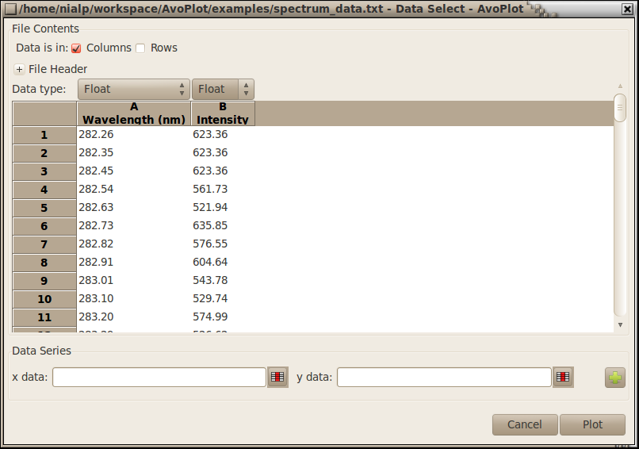
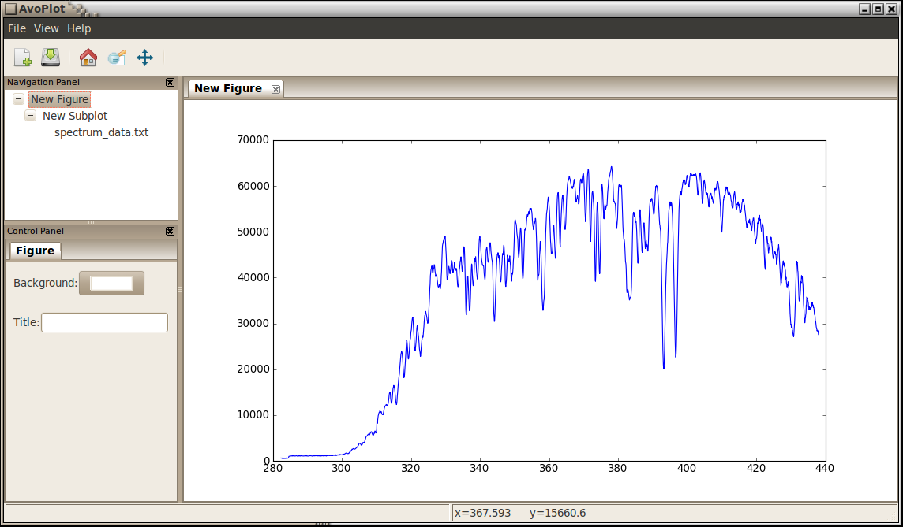

A First Plot
Creating plots with AvoPlot is simple! In this example we will guide you through plotting some data from a text file. We will use the data in the spectrum_data.txt file, which you can find in the examples folder of the AvoPlot package. The file starts with some header data, and then has two columns of numbers (wavelengths and intensities recorded with an ultraviolet spectrometer).
- To create a plot of the data:
- Open the AvoPlot program. For Windows users: a Start menu entry should have been created when you ran the installer but if it is missing then you can double-click on the AvoPlot.py file which will be in the Scripts folder of your Python installation e.g. C:Python27ScriptsAvoPlot.py. Linux/OSX users: a shortcut should have been created in your applications menu (under the Science or Education submenu), if it missing for some reason, then you should just be able to run AvoPlot.py in a terminal.
- Go to File->New->From File or use the New plot icon on the toolbar.
- Select the file you want to plot (in this case spectrum_data.txt)
- You should be presented with the file import dialog shown below.

- Now you are ready to select the data you want to plot:
- Click on the data selection button next to the x-data box, select the first column using the mouse and then click the data selection button again to end selection.
- The x-data box should now display A[:], repeat the above step for the y-data.
- When you have your data selected, click the Plot button in the lower right of the window.
- You should see the data beautifully plotted in the main AvoPlot window as shown below.

Easy! Now the you have a plot, you might want to explore some of the other features of AvoPlot, a summary of the main features is given below:
- Plot Navigation
- AvoPlot provides access to the standard matplotlib plot navigation tools which can be used to pan and zoom the plot. These tools are accessed from the AvoPlot toolbar.
- Plot Properties
The Navigation Panel allows different elements of the plot to be selected. As different plot elements are selected the Control Panel displays relevant editing controls which can be used to adjust plot parameters. If specialised data analysis tools are provided by the plugin which created the plot, then they will also be displayed in the control panel.
All text labels on plots can contain LaTex markup enclosed with dollar signs (in the same way as matplotlib text items)
- Adding Data Series
- Additional data series may be added to a subplot by right clicking on the subplot and selecting Add series from the displayed menu.
- Viewing Plots Simultaneously
- The plots panel of AvoPlot may be split into any number of panels to allow multiple plots to be viewed simultaneously. This can be done either by using the split options in the View menu, right clicking on the plot tab (the actual tab, not the plot area) and using the split options in the resulting menu, or by simply dragging the plot tab to the desired area of the plot window.
{kind=link}
{kind=link}